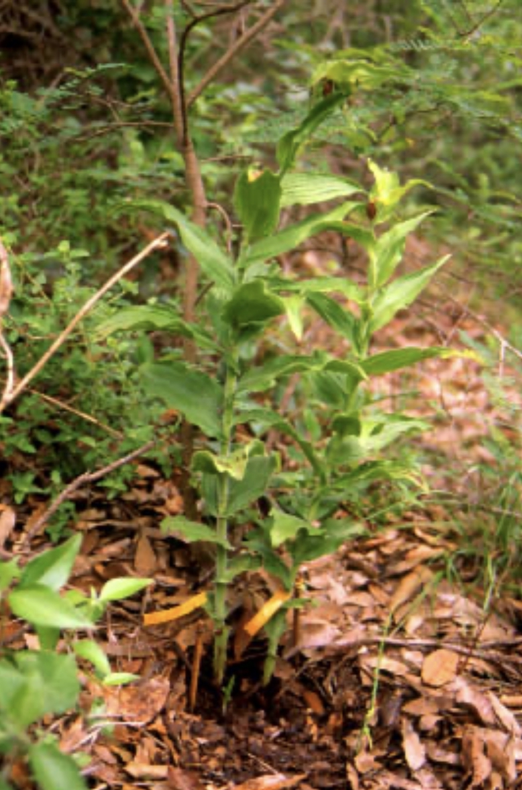

Como recopilar datos en el campo
Por: Aucencia Emeterio-Lara, Mariana Hernández-Apolinar y Raymond L. Tremblay
Con la finalidad de describir el estado de conservación, los estudios de dinámica poblacional se centran en evaluar los cambios en abundancia (i.e. número de individuos) de las poblaciones y entender los procesos biológicos y abióticos que influyen en la variación de dicha abundancia en el tiempo (Silvertown and Charlesworth 2009). En el presente capítulo se destacan algunos aspectos a considerar cuando planeamos iniciar el estudio poblacional de una orquídea de interés. Esta información tiene como objetivo ayudar a planificar las actividades de campo, conocer y manejar información que facilite una toma de datos consistente y evite errores durante su colecta. Es así que se incluyen desde aspectos biológicos hasta técnicas de muestreo, marcaje (i.e. captura) y seguimiento (i.e. recaptura) que son de utilidad en este proceso. En este sentido, y dada la amplia diversidad morfológica en las orquídeas, previo a la salida de campo es recomendable adquirir experiencia en gabinete y campo a través de búsqueda bibliográfica y consulta a expertos y cultivadores.
Consideraciones en la colecta de datos en el campo
Tipo de crecimiento en las orquídeas
En la búsqueda de poblaciones en el medio natural, no solo es importante conocer el tipo de vegetación en que se distribuye de la especie de interés, también es esencial saber su tipo de crecimiento. Este sugiere el sustrato o el hábitat en el que se establecen y desarrollan las orquídeas en el medio natural, el cual puede ser: terrestre, epífito o rupícola; éste último también llamado litófito (Téllez and Flores 2007). Como es evidente en el primer caso, las plantas crecen en suelo, en el segundo sobre ramas y troncos de los árboles, mientras que en el tercero sobre rocas. Cabe señalar que el tipo de crecimiento es distintivo de algunas subfamilias; por ejemplo, las especies de Cypripedioideae, Orchidoideae y Sphirantoideae se destacan por ser predominantemente terrestres, mientras que las de Epidendroideae por ser mayormente epífitas (Cribb 1999). No obstante, es importante señalar que las especies no están estrictamente limitadas a un tipo de crecimiento (F. N. Rasmussen 1999); es decir, hay especies como Dipodium que son epífitas y terrestres o los géneros Lepanthes y Laelia que pueden ser epífitas y rupícolas (Figura CDC.1).
Identificación de las orquídeas
Durante la búsqueda de las poblaciones en campo, es importante tener un entrenamiento que facilite la identifican de la especie de interés. Un primer acercamiento puede ser a partir de su apariencia (A) y uno muy preciso es aquel basado en la determinación botánica (B).
- Apariencia e identificación visual grosso modo. Basados en una serie de rasgos morfológicos o de apariencia es posible identificar visualmente, y de forma general, a distintos géneros de orquídea. Tomando en cuenta estos rasgos es posible clasificar a las orquídeas terrestres, epífitas o rupícolas en distintos grupos.
- En las epífitas se reconocen al menos tres grupos de plantas:
- con tallos engrosados y modificados (i.e. pseudobulbos), e.g. Laelia, Oncidium, Encyclia, Stanhopea, Maxilaria y Rhynchostelle;
- con tallos simples o delgados, e.g Epidendrum y Dichea;
- con hojas engrosadas y tallos compactos o pseudobulbos poco visibles, e. g. Trichocentrum.
- En las terrestres se han identificado seis grupos:
- con tallos y hojas alternas o en espiral, e. g. Cypripedium, Dichromanthus, Habenaria y Triphora;
- con hojas solitarias o en pares, e.g. Bletia, Schiedeella, Malaxis y Govenia;
- con hojas en roseta, e.g. Brachystele, Deiregyne y Sarcoglottis;
- con hojas en abanico, e.g. Paphiopedilum, Phragmipedium;
- sin hojas, e.g. Rhizanthella, Triphora;
- con pseudobulbos, e.g. Oeceoclades y Cymbidium.
- En las rupícolas se han reconocido dos grupos:
- con pseudobulbos e.g. Cattleya, Hoffmannsegella, Laelia y Paphiopedillum;
- sin pseudobulbo, e.g. Lepanthes.
Cabe señalar que, si bien esta clasificación es de utilidad y brinda una idea de la amplia diversidad en la morfología vegetativa de las orquídeas, hay que considerar que solo se basa en su apariencia y facilita su identificación visual grosso modo, por lo que es cualitativa y poco rigurosa desde el punto de vista botánico.
- Identificación botánica de la especie. Cuando se carece de trabajo previo con la especie de interés, y dada la enorme diversidad de especies en la Familia Orchidaceae, para tener certeza en su identidad botánica es preferible contar con el apoyo de un experto en la Familia. Con este objetivo es necesario contar con una muestra fértil de la especie de estudio, ya sea en fresca o herborizada; es decir, una muestra o fragmento de la planta, la cual debe de presentar hojas, tallos o pseudobulbos, flores y/o frutos, que puede estar en estado fresco o seco.
Por otra parte, el apoyo de un experto es necesario cuando dos o más especies del mismo género comparten el hábitat. En estos casos, es posible confundir o mezclar individuos de distintas especies, debido a que pueden presentar características morfológicas o florales muy similares. Por ejemplo, en el género Lepanthes es difícil diferenciar la especie de los individuos recién germinados (Tremblay com. pers.), ya que morfológicamente son muy similares, por lo que el apoyo de un botánico es de gran ayuda para resolver este y otros dilemas. Esta similitud en la morfología de la primeras etapas de vida puede que sean tan similares que las Bromeliads y Orquídeas se pueden confundir para una persona sin experiencia.
Etapas o estados de desarrollo en orquídeas
Si bien las poblaciones se conforman de individuos de la misma especie, en los estudios demográficos se considera que dichos individuos contribuyen a la abundancia de la población de forma distinta. Esto se debe a que, al igual que los seres humanos, las plantas presentan distintas edad, etapas o estados de desarrollo a lo largo de su vida (ver Capítulo X. Ciclo de Vida). En los humanos estas etapas se refieren a los recién nacidos (i.e. bebes), los infantes, los adolescentes y los adultos, mientras que en las plantas se trata de las semillas, las plántulas, los juveniles, los adultos tamaño pequeño, los adultos grande, etc.
Cada una de las etapas en las plantas se debería asocias a características biológicas y morfológicas particulares que permiten reconocerlas y diferenciarlas con relativa facilidad en campo. Por ejemplo, la presencia de flores, frutos o varas florales frescas o secas (i.e. escapos florales) se vincula con la fase adulta en las orquídeas y la presencia de estas estructuras también permiten, en primera instancia, diferenciar a los adultos del resto de la población. Como orquidófilos, la fase adulta es la etapa con la que estamos más familiarizados; sin embargo, una población también está conformada de individuos no reproductivos: plantas juveniles de aspecto similar a las adultas pero sin estructuras reproductivas (i.e. flores, inflorescencias y/o frutos), plántulas o individuos pequeños recién nacidos o establecidos y semillas que perpetúan y dispersan a la especie; clasificación que es denominada estructura poblacional (Silvertown and Charlesworth 2009).
En la separación de las etapas de desarrollo, el trabajo de Tremblay y colaboradores (R. Tremblay and Hutchings 2003) con Lepanthes es de utilidad para ilustrar el tipo de características a considerar. En este caso, para diferenciar las plántulas de los juveniles, los autores utilizaron la presencia de una vaina lepantiforme (lepanthiform sheath) en al menos en uno de los peciolos; es decir, los individuos no reproductivos fueron considerados plántulas si carecían de esta estructura. Por su parte, para diferenciar los juveniles de los adultos consideraron, además las vainas en peciolos, la presencia de inflorescencias secas y activas; éstas últimas en floración, con un escapo en desarrollo (sugiere floración potencial) y/o con un escapo seco, indicando una floración previa (Figura CDC.2).
En las plantas, la estructura de etapas del ciclo de vida de una población debe incluir un número mayor o menor a las cuatro etapas/estados ya mencionados (i.e. semillas, plántulas, juveniles y adultos). Este se debe a que las categorías pueden subdividirse o unirse, como se verá posteriormente en la sección: Ejemplos de categorización en especies de estudio. Sin importar el número de etapas/estados definidos para una población, siempre se debe de contar con un sistema de clasificación sencillo y claro, basado en características distintivas y únicas de cada etapa/estado.
Crecimiento individual
En la definición de las etapas de crecimiento es deseable entender cómo crecen las orquídeas individualmente. A través del crecimiento se infiere cómo cada planta aumenta en volumen o tamaño mediante la expansión o crecimiento vegetativo y del crecimiento reproductivo (Harper et al. 1977). El primer caso se refiere al desarrollo de nuevas estructuras de tipo no reproductivo que conforman el cuerpo de las orquídeas (i.e. hojas, tallos, raíces, pseudobulbos, ramas, etc.), mientras que el segundo a la producción de flores, inflorescencias, frutos y semillas. En las orquídeas ambos tipos de crecimiento se originan de la activación de una yema de reiteración (Dressler 1993).
Como en todas las plantas (Harper et al. 1977), las estructuras vegetativas y reproductivas que se generan a partir de la yema de iteración se repiten como una unidad o módulo y forman el cuerpo de la orquídea, por lo que dice que éstas tienen un hábito de crecimiento modular (Holttum 1995). Por ejemplo, el módulo de crecimiento en Prosthechea karwiskii está representado por una yema de reiteración, el pseudobulbo, las hojas, el rizoma, las raíces y las flores y los frutos, mientras que en Cypripedium irapeanum corresponde a una yema de reiteración, el rizoma, las raíces, el tallo, las hojas, las flores y los frutos (Figura CDC.3). Para un dessarollo más detallado de la morfología de la plantas y el efecto que pudiese tener el crecimiento modular y los proceso evolutivos vea el libro de Carlos Herrera (Multiplicity in Unity) (Herrera 2009)
La forma, estructura o aspecto final de todas las orquídeas (i.e. erectas, rastreras y colgantes), denominado hábito de crecimiento, es otro aspecto que también está asociado con las yemas o brotes de reiteración, en específico con la posición de estas estructuras. Se han descrito dos tipos de hábitos de crecimiento en este grupo de plantas: el monopodial y el simpodial, en los cuales la yema tiene una posición apical o una axilar, respectivamente (Dressler 1993; Hágsater 2005).
El hábito monopodial se caracteriza por la presencia de un eje vegetativo principal o tallo único vertical (i.e. módulo), el cual es producto de la reiteración consecutiva de la yema apical y presenta flores o inflorescencias laterales (Dressler 1993). Este patrón de crecimiento está presente en Campylocentrum, Dendrophylax, Dichea, Renantera, Vanilla y Vanda (Figura CDC.4).
El hábito simpodial se caracteriza porque el crecimiento es a través de brotes o vástagos consecutivos (i.e módulos), agrupados o separados, y unidos por un rizoma, los cuales se generan a partir de una yema axilar situada basal, lateral o apicalmente en el brote anterior. En este hábito, las flores o inflorescencias en las plantas adultas son apicales o laterales, tal es el caso de: Cypripedium, Laelia, Prosthechea (Figura CDC.4).
De acuerdo con Rasmussen (H. Rasmussen 1986), en las orquídeas existe más de una yema de regeneración, las cuales se clasifican por su actividad dos tipos: de renuevo y de reserva. Las primeras son aquellas que se activan y dan continuidad al crecimiento de una planta en cada temporada, mientras que las segundas se activan eventualmente; por ejemplo, cuando la yema de renuevo es eliminada por el ramoneo por algún herbívoro (Emeterio-Lara et al. 2016), o, cuando las condiciones ambientales son favorables para sostener el desarrollo de más de un módulo. En este último caso, la activación da origen a nuevas líneas o frentes de crecimiento que amplían el tamaño de las plantas, como se ha observado en Cypripedium irapeanum y Govenia lagenophora (Hernández-Apolinar et al. 2012; Martı́nez-Villegas et al. 2024).
Consideraciones durante la colecta de datos
Métodos y técnicas de muestreo
El método y técnica de muestreo depende en gran medida del tipo de crecimiento (i.e. epífito, rupícola o terrestre) que presente nuestra especie de interés. No solo eso, también de esta condición depende el grado de dificultad y el tiempo que se invertirá en la toma de datos. Para facilitar esta colecta de información se han implementado distintas técnicas de muestreo según su tipo de crecimiento, las cuales se describen a continuación.
Orquídeas epífitas y rupícolas.
Las orquídeas epífitas y rupícolas viven a distintas alturas en árboles y acantilados. En la colecta de información de estas poblaciones se utilizan desde una simple escalera hasta equipo de alpinismo para ascenso. Desafortunadamente, estas técnicas también han sido usadas para la extracción ilegal de orquídeas con este tipo de crecimiento (Drugs and Crime 2024).
El uso de escaleras es una técnica muy práctica si la especie de estudio se desarrolla en las zonas bajas de los acantilados o en forofítos como arbustos y árboles de porte bajo a medio (Hernández-Apolinar 1992). Sin embargo, esta técnica tiene la desventaja de transportar el instrumento de trabajo hasta el sitio de muestreo.
La técnica de rapel resulta muy útil y segura cuando las orquídeas se distribuyen a una altura considerable de un acantilado e implica el descenso mediante cuerdas hasta llegar a las orquídeas a muestrear. En esta técnica debe subrayarse que, si se carece de experiencia es importante recibir apoyo de gente experta (Larson and Batson 1978).
La técnica de ascenso de una sola cuerda es muy segura (Jepson 2000), si se trata de orquídeas epífitas habitando hospederos de porte medio y alto con troncos y ramas gruesas (Figura CDC.5). Pero tiene algunas limitaciones como es la dificultad de acceder a ramas delgadas en los estratos muy altos. Al igual que en la técnica anterior, si se carece de experiencia en el ascenso de árboles es importante recibir apoyo de expertos.
Debido a que la copa de los árboles no es un ambiente homogéneo (Johansson 1974; Catling 1986), durante el ascenso se debe reportar la zona en que se encuentran las plantas marcadas. Esta información permite suponer las condiciones microclimáticas preferentes para la especie. De acuerdo con Johansson (Johansson 1974) y Catling (Catling 1986), en un árbol hospedero existen seis zonas o estratos (Figura CDC.6), en las cuales es distinta la predominancia de epífitas vasculares y no vasculares (Tabla 1). Particularmente, en los estratos medios II, III, IV se registra la mayor concentración de orquídeas (Mondragón, Maldonado, and Aguilar-Santelises 2007). La Zona VI está asociada a las ramas más externas y delgadas del árbol, las cuales sobrepasan el limite de la zona V, en donde raramente se encuentran algunas orquídeas (Figura CDC.6).
Figura de las zonas de vidas de epifitas basado en Johansson (1974) y Catling (1986).
Las zonas se pueden describir de la siguiente manera:
| Zona | Descripción |
|---|---|
| I | Parte basal del tronco, donde se encuentra musgo y líquenes |
| II | Tronco hasta el inicio de las primeras ramificaciones |
| III | Zona inicial de las ramas o copa interna del árbol |
| IV | Zona media de las ramas o copa media del árbol |
| V | Zona final de las ramas o copa externa del árbol, la ramas más pequeñas que la zona IV |
| VI | Ramitas delgadas de los árboles |
Es la siguiente tabla damos unos ejemplos de orquídeas en cada una de las zonas. Nota que no es una lista exhaustiva, ya que hay muchas más especies que pueden encontrarse en cada una de las zonas. En adición la arquitectura de cada árbol, va influenciar la presencia de cada zona y hay orquídeas que se encuentra en más una zona. Hay especies que se van a encontrar en más de una zona.
Zona | Epífita dominant | Orquídea predominante | Especie | Referencia |
|---|---|---|---|---|
I | Capa de musgo | raramente | Lepanthes caritensis | @tremblay1997lepanthes |
II | Plantas trepadoras | Orquídeas miniatura y grandes | Oncidium altissimum | Tremblay observación personal |
III | Pteridophytas y otras epífitas vasculares | Orquídeas miniatura y grandes | Campylocentrum faciola | Tremblay observación personal |
IV | Orquídeas | Mayor concentración y diversidad de orquídeas grandes y miniatura | Laelia autumnalis | @emeterio2021does |
V | Líquenes | Mayor concentración y diversidad de orquídeas grandes y miniatura | Hintonella mexicana | Emeterio-Lara obervación personal |
VI | Líquenes | Pocas orquídeas, miniatura | Tolumnia variegata | @ackerman1996seedling |
- El Método de triangulación es un método con área que complementa el uso de las técnicas de escalera y de ascenso con una cuerda. Se trata de una técnica no invasiva que permite registrar la ubicación espacial de las orquídeas sobre los árboles (Hernández-Apolinar 1992). El método consiste en definir el área de muestreo (e.g. 20 x 10 m), que corresponde a aquella en la que se ubican los árboles con mayor número de orquídeas. Las esquinas del cuadro o rectángulo definido se marcan con estacas permanentes y se colocan cintas métricas sobre los lados, las cuales se tomarán como referencia para ubicar espacialmente a las orquídeas en ejes de coordenadas x, y, z, siendo ésta última la altura del suelo a la orquídea sobre el tronco o alguna rama (Figures/Triangulation_epífita.pdf). Esta técnica tiene cierto grado de dificultad; sin embargo, es muy precisa, permite estimar la abundancia de la especie por superficie y se tiene la opción de evitar el etiquetado de plantas para su seguimiento. Además, en caso de robo de plantas y/o etiquetas es posible reconocer con facilidad a los individuos faltantes.
Los arboles tiene una distribución espacial en dentro de una área de muestreo, pero la figura anterior muestra como los epifitas que no es en dos dimensiones solamente. Ese componente espacial en 3 dimensiones puediese influenciar los características demográficas de los individuos. Por ejemplo en Tolumnia variegata si la planta ubicada en las ramitas más externa (más sol) versus las del interior del árbol (en la sombra) impacta su esfuerzo reproductivo(R. L. Tremblay, Ackerman, and Pérez 2010).
Orquídeas terrestres.
En el muestreo de poblaciones de orquídeas terrestres se han implementado varias técnicas de muestreo, en esta sección nos referiremos a dos: El método de triangulación y el método sin área. El primero permite estimar el área en que se establece la población, mientras que el segundo no permite establecer esta variable y se centra en el marcaje de individuos.
- Método de triangulación. El método de triangulación es una técnica no invasiva y comúnmente es utilizada para monitorear las poblaciones terrestres en Australia (R. Tremblay et al. 2009b). El método consiste en clavar dos estacas o clavijas permanentes en el suelo, formando un cuadro. La distancia entre estaca y estaca generalmente es de un metro (adaptar a su necesidad). Sobre las estacas se puede sobreponer un clavo donde se amara las cintas métricas. Para la ubicación espacial de los individuos dentro del cuadro, se usa la distancia de cada planta respecto a dos de los lados; en un eje de coordenadas x, y. Esta técnica es muy buena cuando los individuos están separados uno del otro, pero hay que tener cuidado cuando están muy cercanos (menos de 1 cm de distancia). Además, es muy precisa, fácil de implementar y deja muy poca evidencia en el campo.
- Método sin área. En campo, las orquídeas terrestres forman pequeñas colonias (e.g. Bletia campanulata, B. macristhmochila, Govenia lagenophora, Sarcoglottis schaffnerie y Schiedeella albovaginata (Téllez and Flores 2007), e incluso hay especies con individuos aislados: Dichromanthus cinnabarinus, D. aurantiacus (Téllez and Flores 2007), Cypripedium irapeanum (Hernández-Apolinar et al. 2012) y Govenia lagenophora (article? Hernández-Apolinar, M., Gutiérrez-Paredes, C.C y Plata Garfias), por lo que su dinámica poblacional generalmente es descrita a partir de la información obtenida en varias colonias o subpoblaciones. El método sin área ha sido ampliamente usado en este tipo de orquídeas, no es invasivo y consiste en la selección de una colonia o subpoblación en la que se marcan todas las plantas observadas en el lugar (Martı́nez-Villegas et al. 2024). Asimismo, la ubicación de los sitios y los individuos puede georreferirse y/o hacer mapas de localización.
Marcaje y monitoreo de los individuos en el tiempo
La dinámica o cambio en una población se evalúa marcando y siguiendo a todos los individuos que se encuentran en un sitio (i.e. censo) o de solo una parte de éstos (i.e. muestreo) entre periodos de tiempo (tipicamente anual) a lo largo de sus distintas etapas de desarrollo (i.e. semillas, plántulas, juveniles y adultos). Sin importar si censamos o muestreamos, tenemos que asegurar tres aspectos durante el marcaje o etiquetado de una población:
que se incluyan individuos de todas las categorías de etapa/estado que conforman una población,
que el número de individuos sea suficiente para poder llevar a cabo un análisis demográfico robusto que refleje, con cierta precisión, la dinámica de la población seleccionada,
que el registro de la información en campo sea fácil, consistente y sin error, lo cual minimizará los errores durante la recolección de datos.
Identificación y etiquetado de individuos.
Debido a la naturaleza sésil de las plantas, una vez delimitada la población resulta relativamente sencillo contar e identificar a todos los individuos en su estado juvenil y adulto, si se toma en cuenta su aspecto morfológico similar y la presencia o no de estructuras reproductivas (i.e. flores, inflorescencias y/o frutos; ver Sección Etapas o estados de desarrollo en orquídeas). Sin embargo, la identificación y monitoreo de semillas y plántulas es muy difícil de lograr en campo, de ahí que señalemos las siguientes consideraciones:
- Semillas. La fase de semillas es uno de los mayores retos en el estudio de las orquídeas, ya que su tamaño tan pequeño (i.e. son conocidas como semillas polvo o “dust-seeds”) dificulta el seguimiento de su dispersión y germinación en el campo (J. D. Ackerman, Sabat, and Zimmerman 1996; Ticktin et al. 2020). La evaluación de ambos procesos es de gran utilidad en los estudios poblacionales al momento de estimar los valores de fecundidad o de transición al primer estadio del ciclo de vida.
El método más usado para evaluar la germinación en el medio natural es la introducción de bolsas pequeñas de malla de plancton (H. N. Rasmussen and Whigham 1993; H. N. Rasmussen 2011; Anghelescu et al. 2023). Estas bolsas son selladas y contienen un número de semillas definido, posteriormente se colocan en el suelo o sobre los árboles (v.g. ramas, tronco) y se recogen en uno o distintos periodos del año a fin de evaluar la germinación y el establecimiento de nuevos individuos (Emeterio-Lara et al. 2016).
- Plántulas. El seguimiento e identificación de plántulas en campo ha sido poco abordado en campo debido a la dificultad para encontrarlas (especialmente en especie terrestres) y por el desconocimiento de su morfología en la gran mayoría de las orquídeas. Estas condiciones han limita la estimación de parámetros poblacionales como la supervivencia y la transición a la fase juvenil (Aucencia and Anne 2024).
Durante el muestreo de Cypripedium irapeanum, una orquídea terrestre, se encontró un número muy limitado de plántulas en el campo. Estos individuos tuvieron una talla pequeña y además presentaron una morfología distinta a la de un adulto, al ser tallos muy delgados y de apariencia semejante al de un pasto. Durante su búsqueda se urgó principalmente en derredor de las plantas juveniles y adultas de la misma especie, ya que varias se ubicaron en esta zona (Figura DCD.9).

Las plántulas son los individuos más pequeños en la población de orquídeas epífitas, los cuales pueden no reconocerse con facilidad al estar cubiertos de musgo y liquen. Tremblay (com. pers.) ha encontrado a estas pequeñas plantas en alrededor de las plantas adultas, por lo que recomienda esta estrategia de búsqueda en esta fase de desarrollo. Cuando más de una especie del mismo género comparte el mismo hospedero, la identificación se complica; por ejemplo, las plántulas de Lepanthes se establecen entremezclas en el mismo forofíto y carecen de caracteres distintivos en esta etapa, por lo que es imposible distinguirlas por especie (R. Tremblay and Hutchings 2003); esto se logra únicamente cuando se marcan y siguen cuidadosamente a etapas posteriores (juvenil o adulto). A través de esta estrategia, el autor ha logrado distinguir entre plántulas de Lepanthes eltoroensis y L. woodburyana, las cuales se diferencian en la forma de crecimiento del tallo. Al continuar el desarrollo, Lepanthes eltoroensis tendrá un crecimiento postrado, mientras que será erecto en L. woodburyana. Si bien este método es bueno, es importante considerar que puede representar un periodo de tiempo largo y que se corre el riesgo de no saber la especie cuando las plántulas no sobreviven a la siguiente etapa o el estudio temrina antes de las plántulas crecer a la próxima etapa.
Identificar las etapas de la especie con facilidad
Para cualquier estudio usando el acercamiento de dinámica poblacional es necesario conocer lo básico de la especie de interés y las etapas/edades que corresponde al ciclo de vida de esa misma y que sea representativo de la historia de vida de esa especie. Poder reconocer las diferentes etapas del ciclo de vida con exactitud es esencial, por ejemplo separar entre las semillas, plántulas, juveniles y adultos (diferentes tamaños de adultos) y si hay etapas latentes. Cuando se define una etapa de vida se debería tener características morfológicas que se puede identificar en el campo con facilidad para reducir los errores de asignaciones a otras etapas. Por ejemplo en Lepanthes (R. Tremblay and Hutchings 2003) definió un juvenil como individuo que tiene tallos con vaine lepanthiforme lepanthiform sheath en por lo menos una de los peciolos y que no tiene evidencia de presente o anterior de inflorescencias. Nota que aquí la diferencia entre una plántula y un juvenil es que tenga una vaina lepanthiforme y se diferencia de los adultos con la ausencia de evidencia de inflorescencias seca y activa.
Por ejemplo en la foto que sigue tenemos un individuos que tiene dos hojas, una con inflorescencia activa y la otra hoja con inflorescencia secas, por consecuencia ese individuos es un adulto ya que tiene por los menor una inflorescencia activa (produciendo flores o el potencial de producir flores). Nota no es que la inflorescencia tenga flores es que la inflorescencia es verde (el potencial de producir flores). Hay que reconocer que la vida de una flor puede ser muy corto, y que el muestreo es puntual y no todas las flores se van a poder contabilizar (En algunas especies de Lepanthes las plantas florecen todo el año). Debido que no todas las flores se pueden evaluar cuando estan abierto para remoción del pollinio (esfuerzo reproductivo masculino) o deposición de polen sobre el estigma (esfuerzo reproductivo femenino) se puede contabilizar la cantidad de flores contando las cicatrices de la inflorescencia.
Etiquetado de individuos.
Los cambios en abundancia (i.e. número de individuos) de las poblaciones y los procesos biológicos que influyen sobre ésta se estiman a partir del monitoreo y secuenciación de todos y cada uno de los procesos o eventos por los transitan los individuos por estado de un periodo a otro (v.g. un mes o un año). Esto es sólo posible cuando:
- contamos con material de marcaje de calidad y
- un sistema de identificación sencillo y claro.
Estos dos sencillos pasos evitarán mezclar la información entre individuos de una misma población o confundir la información con plantas de otras poblaciones o periodos de tiempo. Es decir, la calidad de nuestros datos dependerá, en parte, de cómo marquemos y de qué calidad sea el material que usemos para el marcaje.
Material recomendado para marcar o etiquetar un individuo o sitio de muestro.
La calidad y la durabilidad del material de marcaje es muy importante cuando hacemos un estudio poblacional, más aún cuando se trata de uno de largo plazo. Si las marcas se desintegran de un periodo a otro, se perderá la identidad de cada planta y si no nos damos cuenta podríamos suponer dos cosas en nuestro siguiente monitoreo: i) que el individuo murió (al no parecer la etiqueta) o ii) que hay un nuevo reclutamiento en la población (aparece un nuevo individuo sin marca). Esto sesgaría nuestros resultados al suponer un aumento en la mortalidad o, en su defecto, un aumento en el reclutamiento. Naturalmente, ese sesgo dependerá del número de individuos que marquemos (i.e. tamaño de la muestra). Por regla general se ha considerado que a menor tamaño de muestra, mayor es el sesgo.
Las etiquetas de dymo resultan ser un buen material al marcar los individuos de las orquídeas de cualquier tipo de crecimiento (i.e. epífito, terrestre o rupícola). Este material ha resultado ser muy duradero en sistemas tropicales; por ejemplo, fueron legibles después de más de 15 años de haber marcado a individuos de Lepanthes (Tremblay com. pers.). El aluminio laminado es otro material barato y duradero sobre el cual se puede escribir fácilmente (Figura CDC.10a); por lo que, se garantiza la permanencia de la marca o etiqueta y la de las inscripciones que hayamos hechos sobre ésta. Además, este tipo de etiquetas, al igual que las de dymo, puede sujetarse a la planta o colocarse cerca de ésta con diferentes materiales; por ejemplo, hilo de pescador, cinchos de plástico, alambre galvanizado o plastificado, clavos, chinchetas y grapas, entre aquellos más usados (Figura CDC.10b). Un aspecto que hay que cuidar al marcar individuos es que las etiquetas se enmascaren con el ambiente; es decir, que no sean muy grandes, estén protegidas y que no sean evidentes para todos, a fin de evitar su pérdida o, incluso, el robo de plantas por gente ajena a la investigación.

La durabilidad del material usado es muy importante cuando existen eventos en el ciclo de vida de una especie que pueden prolongarse por varios años. Este es el caso de algunas orquídeas terrestres que pueden no rebrotar y mantenerse en latencia vegetativa por más de un ciclo anual de forma consecutiva. Por ejemplo, la latencia vegetativa puede durar un periodo consecutivo de tres años en Liparis lilifolia (M. J. Hutchings 1987; Wells 1991), cinco a siete años enEpipactis helleborine (Light and MacConaill 2006; Coates, Lunt, and Tremblay 2006), e incluso ser mayor en Prasophyllum correctum [coates2006effects]. Es así que, una buena secuenciación de estos eventos en un individuo en el mediano y largo plazo depende de la calidad del material usado al marcar las plantas, lo cual a su vez permitirá tener buenas estimaciones del tamaño poblacional y la supervivencia y reproducción en la población.
Al igual que los individuos, los sitios de muestreo también se marcan a fin de facilitar su ubicación en el medio natural. Estos pueden ser marcados usando banderines, etiquetas grandes de aluminio o plástico, cinta de señalización (flagging tape) o pintura permanente; asimismo, también se pueden georeferir y hacer mapas de localización. Cuando se trata de marcas de colores, se deben preferir colores poco llamativos camuflajeados con la vegetación circundante. Si el sitio está bien protegido se puede optar por colores fuertes y llamativos; sin embargo, hay que considerar que los animales (mamíferos, aves, herbívoros) pueden ser atraídos por las marcas e ingerirlas o destruirlas (ciertas orugas le gusta la cinta de dymo y dejan su evidencia); de ahí que se sugiere utilizar etiquetas discretas que favorezcan su permanencia en el mediano y largo plazo. Es sumamente importante poner el máximo de esfuerzo en el muestreo consistente entre periodos y tratar de encontrar todos los individuos previamente marcado.
Información básica en una etiqueta.
La marca o etiqueta de cada uno de los individuos de una población debe compactar la mayor cantidad de información posible, no solo número consecutivos. Es decir, generalmente escribimos números consecutivos (1, 2, 3, 4, etc.) en las etiquetas que colocamos a cada individuo en campo. Sin embargo, si no hay notas guía, esta información es limitada cuando se retoma la investigación en campo; ya que es difícil determinar cuándo ingresaron los nuevos individuos a la población o cuándo se fragmentó una planta para dar origen a un individuo de una categoría distinta al de plántula. Asimismo, si se seleccionan distintas poblaciones o colonias y los números consecutivos son los mismos, podemos confundir la información y llegar a conclusiones erróneas.
Cuando se estudia una sola población, una forma sencilla de evitar errores y anexar más información es escribir en la etiqueta el año de estudio y el número consecutivo de la planta. Por ejemplo, si el estudio comenzó en 2023 y la población está formada por 152 individuos (i.e. captura), éstos se podrían codificar así: 23001, 23002, 23003, … 23152. En el siguiente año (2024) se revisarán o censarán los 152 individuos originalmente marcados (i.e. recaptura) y se etiquetarán los nuevos individuos que ingresan a la población (v.g. plántulas), cuya marca iniciará con 24 y el número consecutivo (153 en adelante). De esta forma se conocerá el año de ingreso, marcaje e inicio de la captura de datos del individuo, lo cual evitará la redundancia en el código y ayudará a reducir los errores de identificación.
Cuando la orquídea de interés no tiene una distribución regular y tienen una distribución aparchonada (concentradas en un área) en distintas zonas de un mismo lugar, para evitar errores de codificación se sugiere que en cada parche se mantengan números consecutivos (23001, 23002, 23003, etc.) y se evite mezclar los números asignados (23001, 23012, 23043, etc.). Esta misma regla se mantiene cuando se trabaja con distintas poblaciones de la misma especie.
Otra forma de codificar las múltiples poblaciones o subpoblaciones es a través de una codificación alfanumérica, en la que la letra del alfabeto representa a la población y el número a los individuos marcados para su monitoreo. De esta manera, las marcas individuales se verían de la siguiente forma: A23001, A23002, …, 23xxx para la primera población y B23001, B23002, …, B23xxx para la segunda población y así sucesivamente, en caso de estudiar más de dos poblaciones. Una tercera opción es asignar un número a cada población y añadir el número consecutivo correspondiente. En este caso las etiquetas de las plantas número 10 en dos sitios se verían de la siguiente manera: 1.10 y 2.10. Si queremos añadir el año del estudio, éste también puede ser al final y sería de la siguiente forma: 1.10.23 y 2.10.23. Para los nuevos ingresos se sigue la misma lógica del inciso anterior, por lo que la nueva planta 155 que ingresa en 2024 a la población 1 le corresponderá la etiqueta 1.155.24.
Colocación de la etiqueta.
Existen distintas formas de colocar las etiquetas o marcas en los individuos seleccionados para el estudio y, por regla general, su ubicación no debe afectar el desempeño de la planta marcada y si asegurar su permanencia en el mediano y largo plazo. Por ejemplo, en las orquídeas epífitas de tamaño grande, la etiqueta de identidad se puede colocar abrazando a la planta, incluyendo la rama o tronco donde se desarrolla, o bien, colocarse abrazando a uno solo de los módulos. En el caso de Laelia autumnalis (Emeterio-Lara et al. 2021), además de la etiqueta de identificación, se identificó otra etiqueta el último módulo (el más joven o reciente) de cada uno de los frentes de crecimiento. Este tipo de marcaje permitió determinar la biomasa nueva que se agrega cada año a cada planta y, al mismo tiempo, permitió identificar la permanencia, crecimiento o retrogresión entre fases de crecimiento.

Las plántulas son muy frágiles por lo que para no dañar sus estructuras se debe contar con material suave y, preferentemente, se debe evitar el contacto con las plantas. En Lepanthes eltoroensis, Tremblay fijó las etiquetas a un lado de las plántulas con clavos pequeños y posteriormente cambió a grapas, que causan menos daño al árbol hospedero.
En las orquídeas terrestres Cypripedium irapeanum y Govenia lagenophora las etiquetas de aluminio o cinta dymo fueron amarradas con alambre plastificado a palos o clavos, semejando banderitas, las cuales fueron clavadas en el suelo cerca de los tallos o pseudbulbos de las plantas.

Variables a registrar en campo
En esta sección se presentan algunos ejemplos de cómo se ha dividido la estructura poblacional en orquídeas con distinto hábito de crecimiento. A través de los ejemplos es evidente que las categorías de etapa/estado no siempre son las mismas en las especies, ya que depende de aspectos biológicos de las plantas (v.g. características morfológicas, de crecimiento, de reproducción), de la información disponible, del número de individuos marcado y de las preguntas de interés en la investigación (Hernández-Apolinar 1992; Mondragón and Elliott 2013).
Sin importar las variables que usemos en la clasificación de las plantas, se necesita capturar información relevante en las especies, la cual es común en todos los estudios poblacionales (Tabla 2). La primera información se obtiene al inicio del estudio, definido como el tiempo cero o inicial \(t_{0}\) y se refiere a las características básicas más simples que permiten diferenciar un estadio de otro, mientras que los siguientes periodos de toma de datos, denominados como \(t_{+1}\) (i.e n = 2, 3, 4, … n), permiten entender los cambios que ocurren en los individuos de un periodo a otro (i.e. crecen, se reproducen, viven o mueren) y, además, captar de dónde provienen los nuevos individuos que ingresan a la población (i.e. semilla, origen vegetativo o clonación) en el periodo \(t_{+n}\).
Las variables esenciales (Tabla 2), junto con las características definidas en cada etapa de desarrollo (ver Ejemplos de categorización), permiten conocer, por un lado, cuál o cuáles de las categorías son muy dinámicas o, por el contrario, constantes en el ciclo de vida de la especie de interés; y por otro, el estado de conservación de la población en su conjunto. Esta última definida a partir de la tasa finita de crecimiento poblacional como se establece en el Capítulo XX.
| Variables esenciales en un censo demográfico | |
|---|---|
| Tiempo inicial t_0 | Muestreo posterior t+1 |
| Etapa del individuo | Etapa del individuo |
| Presencia/ausencia del individuo | |
| Presencia/ausencia de flores/inflorescencia y/o frutos | Presencia/ausencia de flores/inflorescencia y/o frutos |
| Cantidad de flores | Cantidad de flores |
| Cantidad de frutos | Cantidad de frutos |
| Cantidad de individuos en la población1 | |
| 1 Especificar si se trata de individuos procedentes de semilla o si su origen es por clonación (v.g. keikis, pseudobulbos separados, activación de yemas de reserva en pseudobulbos y rizomas, etc.). | |
Crecimiento o reiteración vegetativa.
El crecimiento en las orquídeas es a partir de las yemas de reiteración, las cuales se encuentran en la base de pseudobulbos de plantas epífitas y justo por debajo del suelo en los cormos, rizomas, tubérculos y pseudobulbos de plantas terrestres. Con la activación de estas yemas, en cada temporada de crecimiento se desarrollan estructuras que dan continuidad al crecimiento individual, las cuales en conjunto son conocidas como módulo de iteración o unidad de crecimiento básico. El módulo es característico de todas las plantas (Harper et al. 1977) y varía en forma según la especie que se trate. En algunas orquídeas terrestres, por ejemplo, este módulo está representado por un cormo, yemas de regeneración, hojas , flores y frutos; éstos dos últimos cuando se trata de plantas adultas. Las mismas estructuras se desarrollan en otras orquídeas, aunque en lugar del cormo se genera un pseudobulbo, un rizoma o un tubérculo(s), según la orquídea en cuestión.
Las yemas de regeneración se pueden clasificar por su actividad en dos tipos: renuevo y reserva (H. N. Rasmussen 1995). Las primeras son aquellas que se activan y dan continuidad al crecimiento de una planta en cada temporada, mientras que las segundas se activan eventualmente. En orquideas epífitas como Laelia autumnalis y L. speciosa (Emeterio-Lara et al. 2016; Hernández-Apolinar 1992), así como en orquídeas terrestres Cypripedium irapeanum y Govenia lagenophora (Hernández-Apolinar et al. 2012; Martı́nez-Villegas et al. 2024), se ha observado que las yemas de renuevo se activan (i.e. generalmente una) y dan origen al nuevo módulo al inicio de una temporada de crecimiento; que se suma a la secuencia de módulos formados en periodos previos. En el caso de Govenia lagenophora el nuevo cormo que se produce, reemplaza al módulo del año previo al morir. Asimismo, estos autores también han reconocido que las yemas de reserva pueden activarse cuando las condiciones ambientales son favorables para sostener el desarrollo de más de un módulo, dando origen a nuevas líneas o frentes de crecimiento que amplían su tamaño (Figuras 1 y 2, cual son estas figuras?).
Si bien las orquídeas epífitas y terrestres son perennes, lo que significa que viven por más de dos años consecutivos. Es importante hacer notar que, el crecimiento es estacional en un gran número de estas plantas; es decir, que la gran mayoría de especies solo producen módulo de crecimiento en una época del año (v.g. lluvias o primavera) caracterizada por presentar las condiciones ambientales (i.e. luz, agua, etc.) adecuadas que permiten su reiteración. Después de este periodo, las orquídeas no tienen actividad y, por lo tanto, no producen nuevas estructuras, y solo captan y/o usan los recursos necesarios para sobrevivir. Este comportamiento es muy evidente en las orquídeas epífitas, pero lo es más aún en muchas de las orquídeas terrestres, ya que éstas emergen del suelo y son evidentes y emergente del suelo sólo en un periodo de año especifico (generalmente lluvias o primavera/verano) para después marchitarse y desaparecer en la época menos favorable (v.g. época seca o fría, con nieve). Sin embargo, el hecho de que no estén visibles no implica que hayan muerto, como sería el caso de las plantas anuales (v.g. cosmos). Por el contrario, como parte de su ciclo de vida, las orquídeas terrestres viven bajo el suelo una parte del año; fase conocida como subterránea o latencia vegetativa (Shefferson et al. 2020). Esta condición es equivalente a la hibernación en los animales, ya que las plantas sobreviven reduciendo sus actividades fisiológicas y consumiendo los recursos que almacenaron en los cormos, pseudobulbos, tubérculos o rizomas, que también son órganos de almacenamiento (referencia). Aunque a diferencia de los animales, la latencia vegetativa puede prolongarse por más de un año en forma consecutiva en muchas especies, cuando la planta no almacenó suficientes recursos o no existen las condiciones ambientales propicias para su desarrollo (Schefferson et al. 2020). Por ejemplo, los tubérculos de Liparis liliifolia (M. J. Hutchings 1987; Wells 1991) y Orchis simia (Willems and Bik 1991) pueden sobrevivir de forma subterránea por tres años, mientras que Epipactis helleborine por 5 a 7 años (Light and MacConaill 2006). En los estudios poblacionales esta situación dificulta la estimación de la mortalidad en las orquídeas terrestres y, en consecuencia, se desconoce la supervivencia real de las distintas fases de desarrollo de la especie y el tamaño real de una población de interés. Múltiples acercamiento han sido desarrollado para considerar el periodo de no avistamiento en la dinámica de orquídeas (Shefferson et al. 2003; Kéry and Gregg 2004; Shefferson, Kull, and Tali 2005). Nuevos métodos bayesiano para estimar los parámetros de supervivencia condicional basado en si la plantas eran vista el año anterior o no y la cantidad de años sin ser vista han ayudado a estimar parámetros del ciclo de vida más consonó al los patrones naturales de las especies (R. Tremblay et al. 2009a, 2009b).
Ejemplos de categorización en especies de estudio
En esta sección mencionamos algunas de las clasificaciones de las etapas de desarrollo en orquídeas terrestres y epífitas, que han sido utilizadas en distintos estudios poblacionales. En la mayoría de los casos, las categorías se definen a partir de la morfología de los individuos y su actividad reproductiva, aunque también se han considerado otros aspectos como el número de módulos o pseudobulbos por planta, el número de hojas y la presencia o ausencia de flores y frutos. En algunos casos, se ha considerado la presencia o ausencia de inflorescencias secas como un indicador del estado del individuo. En algunas especies terrestres hay de vez en cuando una etapa no vista, donde no se sabe si el individuo es vivo o latente.
Etapas o estadios de desarrollo
En esta sección se presenta algunos ejemplos de estructura usado en diferentes trabajos para categoriazar los estados de desarrollo en orquídeas terrestres y epífitas. En la mayoría de los casos las categorías se definen a partir de la morfología de los individuos y su actividad reproductiva, aunque también se han considerado otros aspectos como el número de módulos o pseudobulbos por planta, el número de hojas y la presencia o ausencia de flores y frutos. En algunos casos se ha considerado la presencia o ausencia de inflorescencias secas como un indicador del estado del individuo. En algunas especies terrestres hay de vez en cuando una etapa no vista, donde no se sabe si el individuo es vivo o latente.
- Govenia lagenophora.
Martínez-Villegas y colaboradores (Martı́nez-Villegas et al. 2024) definieron cuatro categorías de estado (i.e. Reproductivo, No reproductivo, Cormo y Ausente) para la orquídea terrestre Govenia lagenophora, cuya dinámica poblacional fue analizada en la Reserva del Pedregal de San Ángel, Ciudad de México, México. La estimación de las variables poblacionales fue estimada a partir de cuatro años de monitoreo.
Reproductivo: Individuos con hojas y con inflorescencia.
No reproductivo: Individuos con hojas y sin evidencia de ser reproductivos
Cormo: Individuos latentes, sin producción de hojas o inflorescencias.
Ausente: Individuos no detectados.
- Caladenia.
Tremblay y colaboradores (R. Tremblay et al. 2009a, 2009b), estudiaron nueve especies del género Caladenia en distintas localidades de Australia, cuya demografía fue analizada a partir de tres categorías de estado: individuos vegetativos, individuos en floración e individuos latentes.
- Individuos vegetativos: Individuos con hojas y sin evidencia de ser reproductivos.
- Individuos Reproductivo: Individuos con hojas y en flor.
- Individuos Latente. Individuos sin actividad aérea.
- Laelia speciosa.
Hernández-Apolinar (Hernández-Apolinar 1992) por su parte trabajó con la especie epífita Laelia speciosa, en la cual se identificaron cuatro fases: plántulas, juveniles y dos estadios de adultos. Las fases de adultos y juveniles se determinaron a partir del conteo de módulos, que en este caso se trató del número de pseudobulbos por planta. A continuación, se define cada categoría considerada.
- Plántula : Individuo con un pseudobulbo pequeño (3mm de alto) o sin pseudobulbos y presentado 2 hojas pequeñas (hasta 5 mm de alto) y 1-2 raíces
- Juvenil: Individuo no reproductivo, con 2 a 10 pseudobulbos y que presentan las puntas de los pseudobulbos redondeadas sin evidencia del escapo floral, que es persistente.
- Adulto 1: Individuo con y sin flores, con escapos florales previos y de 11 a 20 pseudobulbos
- Adulto 2: Individuo con y sin flores, con escapos florales previos y con 21 o más pseudobulbos
- Laelia autumnalis.
Emeterio-Lara y colaboradores (Emeterio-Lara et al. 2021) estudiaron poblaciones de la orquídea epífita Laelia autumnalis. Las plantas de Laelia autumnalis fueron clasificadas en cinco categorías con base a su biomasa.
- Plántula. Individuos con un pseudobulbo pequeño
- Juveniles 1. Individuos no reproductivos y peso < 9.5 g
- Juveniles 2. Individuos con peso de 9.5-23.5 g, ocasionalmente reproductivos
- Adulto 1. Individuos reproductivos con peso de 23.5-49.5 g
- Adulto 2. Individuos reproductivos con peso > 49.5 g
- Ophrys sphegodes
Hutchings (M. Hutchings 2010) analizó la dinámica poblacional de Ophrys sphegodes por 30 años. Esta orquídea terrestre se monitoreó durante su fase aérea, considerando la presencia o ausencia de plantas. A las plantas que emergieron del suelo se les trató como ramets (i.e. plantas independientes con la misma información genética), debido a que de los tubérculos (i.e. órganos de perennación subterráneos) de Ophrys sphegodes se da origen a más de una planta. Por convención los ramets (i.e. fragmentos de una planta con vida independiente y con la misma información genética) se analizan como si fueran genéticamente independientes.
En el estudio utilizaron tres categorías para su análisis:
- Vegetativos: Individuos no reproductivos caracterizados por la presencia de hojas en roseta.
- En floración: Individuos con hojas en roseta que presentan inflorescencia.
- Latentes: Individuos que no emergen en la época de crecimiento.
- Brassavola cucullata.
Ackerman y colaboradores (J. Ackerman et al. 2020) trabajaron con tres poblaciones de Brassavola cucullata en las Islas de San Eustaquio y Saba, en las Antillas. En estas islas, la especie presenta un hábito de crecimiento epífito o rupícola.
Usando el número de hojas se establecieron cuatro categorías de estado:
- Juveniles 1: Plantas con 1 ó 2 hojas.
- Juveniles 2: Plantas con 3 a 6 hojas.
- Adultos 1: Plantas con 7 a 20 hojas.
- Adultos 2: Plantas con más de 20 hojas.
- Aspasia principissa.
Zotz y Schmidt (Zotz and Schmidt 2006) analizaron el comportamiento poblacional de Aspasia principissa en la Isla de Barro Colorado, Panamá. A partir del tamaño del pseudobulbo más reciente, los investigadores determinaron siete categorías de tamaño en la población. Además, se evaluó la presencia de flores y frutos en las plantas con un pseudobulbo reciente mayor a 7 cm de altura.
- SC1. Individuos con tamaño del pseudobulbo reciente < 1.5 cm.
- SC2. Individuos con tamaño del pseudobulbo reciente de 1.6 a 2.5 cm.
- SC3. Individuos con tamaño del pseudobulbo reciente de 2.6–4.0 cm.
- SC4. Individuos con tamaño del pseudobulbo reciente de 4.1–6.0 cm.
- SC5. Individuos con tamaño del pseudobulbo reciente de 6.1–8.0 cm.
- SC6. Individuos con tamaño del pseudobulbo reciente de 8.1–11.0 cm.
- SC7 Individuos con tamaño del pseudobulbo reciente > 11.0 cm
- Lepanthes.
Tremblay (R. Tremblay and Hutchings 2003) en su estudio con el género Lepanthes, una orquídea miniatura epífita, definió cuatro categorías generales básicas que permiten establecer la estructura de su ciclo de vida:
- Plántula: individuo sin hojas y con peciolo.
- Juvenil: individuo con hojas y peciolo, pero sin evidencia de haber sido reproductivo en el pasado (la base de las inflorescencias es persistentes)
- Adulto no-reproductivo: individuos con inflorescencias secas (ninguna verde)
- Adulto reproductivo: individuo con inflorescencia verdes con o sin flores o frutos previos.
Estas categorías básicas fueron las usadas para el análisis poblacional de de L. caritensis (R. Tremblay and Hutchings 2003). Sin embargo, el autor destaca que estas categorías pueden subdividirse, siempre y cuando se tengan un buen tamaño de muestra y se tengan claras las características tomadas en cuenta. Por ejemplo, el número de categorías aumentó a cinco al incluir una segunda etapa de adulto reproductivo en L. rubripetala y L. eltoroensis, e incluso pasó a seis en L. rupestris al incluir además otro estado no reproductivo (R. Tremblay and Ackerman 2001).
Revision:
- RLT Sept 14, 2024
- RLT Jan 19, 2025
- RLT Apr 19, 2025
- Mariana May 2nd, 2025
References
Ackerman, James D, A Sabat, and JK Zimmerman. 1996. “Seedling Establishment in an Epiphytic Orchid: An Experimental Study of Seed Limitation.” Oecologia 106: 192–98.
Ackerman, JD, RL Tremblay, ME Pérez, H Madden, M Bechtold, and M Boeken. 2020. “Small Populations on Small Islands: What Chance Does an Orchid Have?” International Journal of Plant Sciences 181 (7): 667–85.
Anghelescu, Nora E, Yavar Vafaee, Kolsum Ahmadzadeh, and Jen-Tsung Chen. 2023. “Asymbiotic Seed Germination in Terrestrial Orchids: Problems, Progress, and Prospects.” Advances in Orchid Biology, Biotechnology and Omics, 221–60.
Aucencia, Emeterio-Lara, and Damon Anne. 2024. “Acclimatization with Endophytic Fungi and Reintroduction of Guarianthe Skinneri (Bateman) Dressler & WE Higgins, a Threatened, Native Orchid of Cultural Value in Southern Mexico.” Journal for Nature Conservation 78: 126573.
Catling, Paul M. 1986. “Epiphytic Orchids in a Belizean Grapefruit Orchard: Distribution, Colonization, and Association.” Lindleyana 1: 194–202.
Coates, Fiona, Ian D Lunt, and Raymond L Tremblay. 2006. “Effects of Disturbance on Population Dynamics of the Threatened Orchid Prasophyllum correctum DL Jones and Implications for Grassland Management in South-Eastern Australia.” Biological Conservation 129 (1): 59–69.
Cribb, Phillip J. 1999. “II MORPHOLOGY.” Genera Orchidacearum: Volume 1: Apostasioideae and Cypripedioideae 11: 12.
Dressler, Robert L. 1993. Phylogeny and Classification of the Orchid Family. Cambridge University Press.
Drugs, United Nations Office on, and Crime. 2024. World Wildlife Crime Report 2024: Trafficking in Protected Species. UN.
Emeterio-Lara, Aucencia, José G Garcı́a-Franco, Mariana Hernández-Apolinar, Vı́ctor H Toledo-Hernández, Susana Valencia-Dı́az, and Alejandro Flores-Palacios. 2021. “Does Extraction of Orchids Affect Their Population Structure? Evidence from Populations of Laelia autumnalis (Orchidaceae).” Forest Ecology and Management 480: 118667.
Emeterio-Lara, Aucencia, Vladimira Palma-Linares, Luis Miguel Vázquez-Garcı́a, and Jaime Mejı́a-Carranza. 2016. “Usos y Comercialización de Orquı́deas Silvestres En La Región Sur Del Estado de méxico.” Polibotánica, no. 42: 197–214.
Hágsater, Eric. 2005. Orchids of Mexico. Productos Farmacéuticos, SA de CV.
Harper, John L et al. 1977. “Population Biology of Plants.” Population Biology of Plants.
Hernández-Apolinar, Mariana. 1992. “Dinámica Poblacional de Laelia speciosa (HBK) Schltr. (Orchidaceae).” Bachelor Thesis. Faculdad de Ciencias, UNAM. Master’s thesis, Mexico City, Mexico.
Hernández-Apolinar, Mariana, CC Gutiérrez-Paredes, I Sánchez-Gallen, E Aguirre, and EA Pérez-Garcı́a. 2012. “Ecological Aspects of Cypripedium irapeanum La Llave & Lex., an Endangered Mexican Orchid Species.” SOA Newsletter 13 (4): 1–5.
Herrera, Carlos M. 2009. Multiplicity in Unity: Plant Subindividual Variation and Interactions with Animals. University of Chicago Press.
Holttum, Richard E. 1995. “Growth-Habitat of Monocotyledons-Variations on a Theme.” Phytomorphology 5: 399–413.
Hutchings, Michael J. 1987. “The Population Biology of the Early Spider Orchid, Ophrys sphegodes Mill. I. A Demographic Study from 1975 to 1984.” The Journal of Ecology, 711–27.
Hutchings, MJ. 2010. “The Population Biology of the Early Spider Orchid Ophrys sphegodes Mill. III. Demography over Three Decades.” Journal of Ecology 98 (4): 867–78.
Jepson, Jeff. 2000. “The Tree Climber’s Companion.” Beaver Tree Pub., Longville, MN USA.
Johansson, Dick. 1974. “Ecology of Vascular Epiphytes in West African Rain Forest.” PhD thesis, Sv. växtgeografiska sällsk.
Kéry, Marc, and Katharine B Gregg. 2004. “Demographic Analysis of Dormancy and Survival in the Terrestrial Orchid Cypripedium reginae.” Journal of Ecology 92 (4): 686–95.
Larson, Steven S, and Wade T Batson. 1978. “The Vegetation of Vertical Rock Faces in Pickens and Greenville Counties, South Carolina.” Castanea, 255–60.
Light, Marilyn HS, and Michael MacConaill. 2006. “Appearance and Disappearance of a Weedy Orchid, Epipactis helleborine.” Folia Geobotanica 41: 77–93.
Martı́nez-Villegas, Jorge A, Irene Pisanty, Carlos Martorell, Mariana Hernández-Apolinar, Teresa Valverde, Luisa A Granados-Hernández, Mariana Rodrı́guez-Sánchez, and J Jaime Zúñiga-Vega. 2024. “Estimation of Demographic Parameters of Some Plant Species Accounting for Imperfect Detection Probabilities.” Population Ecology 66 (1): 22–38.
Mondragón, Demetria, and Daniela Dutra Elliott. 2013. “The Population Dynamics of Epiphytic Orchids: A Review and Methodological Guide.” Treetops at Risk: Challenges of Global Canopy Ecology and Conservation, 377–85.
Mondragón, Demetria, Citlalli Maldonado, and Remedios Aguilar-Santelises. 2007. “Life History and Demography of a Twig Epiphyte: A Case Study of Erycina crista-Galli (Orchidaceae).” Selbyana, 137–44.
Rasmussen, Finn N. 1999. “12 the Development of Orchid Classification.” Genera Orchidacearum: Volume 1: Apostasioideae and Cypripedioideae 1: 12.
Rasmussen, Hanne. 1986. “The Vegetative Architecture of Orchids.”
Rasmussen, Hanne N. 1995. Terrestrial Orchids: From Seed to Mycotrophic Plant. Cambridge University Press.
———. 2011. “Methods of Studying Field Germination and Seedling Physiology: Present Potential and Drawbacks.” European Journal of Environmental Sciences 1 (2).
Rasmussen, Hanne N, and Dennis F Whigham. 1993. “Seed Ecology of Dust Seeds in Situ: A New Study Technique and Its Application in Terrestrial Orchids.” American Journal of Botany 80 (12): 1374–78.
Shefferson, Richard P, Hans Jacquemyn, Tiiu Kull, and Michael J Hutchings. 2020. “The Demography of Terrestrial Orchids: Life History, Population Dynamics and Conservation.” Botanical Journal of the Linnean Society 192 (2): 315–32.
Shefferson, Richard P, Tiiu Kull, and Kadri Tali. 2005. “Adult Whole-Plant Dormancy Induced by Stress in Long-Lived Orchids.” Ecology 86 (11): 3099–3104.
Shefferson, Richard P, Joyce Proper, Steven R Beissinger, and Ellen L Simms. 2003. “Life History Trade-Offs in a Rare Orchid: The Costs of Flowering, Dormancy, and Sprouting.” Ecology 84 (5): 1199–1206.
Silvertown, Jonathan, and Deborah Charlesworth. 2009. Introduction to Plant Population Biology. John Wiley & Sons.
Téllez, VMAA, and LV Flores. 2007. “Orquı́deas Terrestres Del Pedregal de San Ángel.” UNAM. México, DF.
Ticktin, Tamara, Demetria Mondragón, Leonel Lopez-Toledo, Daniela Dutra-Elliott, Ernesto Aguirre-León, and Mariana Hernández-Apolinar. 2020. “Synthesis of Wild Orchid Trade and Demography Provides New Insight on Conservation Strategies.” Conservation Letters 13 (2): e12697.
Tremblay, Raymond L. 1997. “Lepanthes caritensis, an Endangered Orchid: No Sex, No Future?” Selbyana, 160–66.
Tremblay, Raymond L, James D Ackerman, and Maria-Eglée Pérez. 2010. “Riding Across the Selection Landscape: Fitness Consequences of Annual Variation in Reproductive Characteristics.” Philosophical Transactions of the Royal Society B: Biological Sciences 365 (1539): 491–98.
Tremblay, RL, and JD Ackerman. 2001. “Gene Flow and Effective Population Size in Lepanthes (Orchidaceae): A Case for Genetic Drift.” Biological Journal of the Linnean Society 72 (1): 47–62. https://doi.org/10.1006/bijl.2000.0485.
Tremblay, RL, and MJ Hutchings. 2003. “Population Dynamics in Orchid Conservation: A Review of Analytical Methods Based on the Rare Species Lepanthes eltoroensis.” Orchid Conservation. Kota Kinabalu: Natural History Publications (Borneo), 183–204.
Tremblay, RL, ME Perez, M Larcombe, A Brown, J Quarmby, D Bickerton, G French, and A Bould. 2009a. “Dormancy in Caladenia: A Bayesian Approach to Evaluating Latency.” Australian Journal of Botany 57 (4): 340–50.
———. 2009b. “Population Dynamics of Caladenia: Bayesian Estimates of Transition and Extinction Probabilities.” Australian Journal of Botany 57 (4): 351–60.
Wells, TCE. 1991. “Demographic and Biological Studies on Ophrys apifera: Some Results from a 10 Year Study.” Population Ecology of Terrestrial Orchids.
Willems, JH, and L Bik. 1991. “Population Biology of Orchis simia in the Netherlands, 1972–1990.” In Population Ecology of Terrestrial Orchids, edited by T. C. E. Wells and J. H. Willems, 33–45. SPB Academic Publishing bv, The Hague.
Zotz, Gerhard, and Gerold Schmidt. 2006. “Population Decline in the Epiphytic Orchid Aspasia principissa.” Biological Conservation 129 (1): 82–90. https://doi.org/10.1016/j.biocon.2005.07.022.